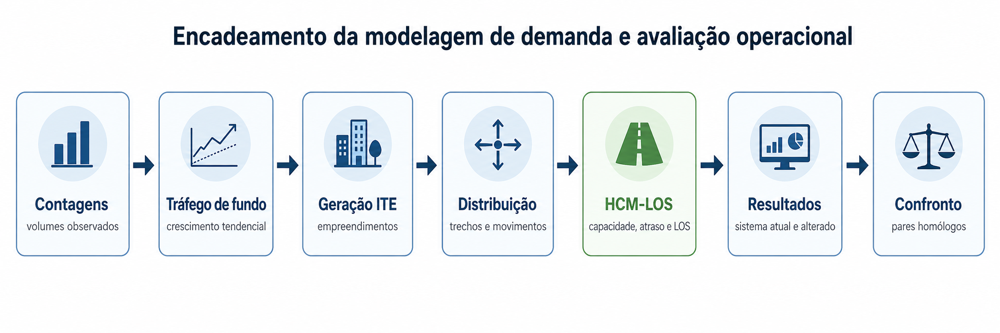

Navegação: ← Anterior | Sumário | Próximo →
9. METODOLOGIA DE MODELAGEM E CENÁRIOS¶
9.1 Estrutura geral da modelagem¶
A modelagem organiza os volumes de campo, o crescimento tendencial, a geração incremental dos empreendimentos e os parâmetros operacionais HCM-LOS em uma cadeia única de cálculo. Essa cadeia permite comparar o sistema viário atual e o sistema viário alterado sob os mesmos horizontes e premissas de demanda.
| Etapa | Conteúdo | Fonte principal |
|---|---|---|
| Levantamentos | Contagens classificatórias e direcionais por ponto | Capítulo 8 e planilhas de contagem |
| Tráfego de fundo | Crescimento geométrico anual | Premissas registradas na base técnica e planilhas de cálculo |
| Geração incremental | Viagens associadas aos dez empreendimentos | Cadastro técnico e metodologia ITE |
| Distribuição | Alocação dos fluxos por trecho, faixa, aproximação e movimento | Matrizes e arquivos HCM-LOS |
| Avaliação operacional | Capacidade, atraso, V/C e LOS | Planilhas HCM-LOS de segmentos, interseções e rotatória |
| Confronto | Comparação entre sistema atual e alterado | Capítulos 10, 11 e 12 |
Tabela 9.1 - Estrutura geral da modelagem
9.2 Cenários analisados¶
O estudo distingue a malha atual, a malha alterada e os cenários de demanda aplicados a cada uma. A comparação operacional principal utiliza o cenário A2, isto é, tendencial acrescido do incremento dos empreendimentos.
| ID | Descrição | Uso no estudo |
|---|---|---|
| A0 | Observado/base | Calibração de volumes e referência de campo |
| A1 | Tendencial | Crescimento de fundo sem novos empreendimentos modelados |
| A2 | Tendencial + empreendimento | Cenário principal dos resultados dos capítulos 10 a 12 |
| A3 | Sensibilidade/pipeline | Fora do corpo principal, salvo estudo complementar |
Tabela 9.2 - Cenários de demanda e uso no estudo
9.3 Tráfego de fundo¶
O tráfego de fundo corresponde ao crescimento natural da circulação viária, independentemente da geração incremental atribuída aos empreendimentos considerados no estudo. Para sua estimativa, adotou-se crescimento geométrico da frota veicular à taxa de 2,14% ao ano, aplicado sobre a demanda de base antes da incorporação dos incrementos de tráfego provenientes dos empreendimentos.
| Parâmetro | Valor ou critério |
|---|---|
| Tipo de crescimento | Geométrico |
| Taxa anual registrada | 2,14 % a.a. |
| Horizontes | 5, 10 e 15 anos |
| Aplicação | Projeção do tráfego de base antes da soma do incremento dos empreendimentos |
Tabela 9.3 - Tratamento do tráfego de fundo
9.4 Empreendimentos considerados e critérios de ocupação atual¶
Foram considerados dez empreendimentos cadastrados na base vigente do estudo, sendo quatro de uso misto e seis exclusivamente residenciais. Para todos os casos, a ocupação atualmente existente foi tratada como demanda já incorporada à rede viária na condição de referência, motivo pelo qual não foi novamente computada como incremento nos horizontes de 5, 10 e 15 anos.
Dessa forma, a geração incremental adotada na modelagem corresponde exclusivamente à parcela ainda não ocupada de cada empreendimento. Operacionalmente, o fluxo bruto potencial foi abatido da ocupação atual observada, resultando no fluxo líquido remanescente efetivamente considerado nas projeções do cenário tendencial acrescido dos empreendimentos.
| Empreendimento | Tipo | Classificação | Lotes | Área de lotes (m²) | Ocupação atual (%) | Fluxo bruto (veic/h) | Fluxo absorvido pela ocupação atual (veic/h) | Fluxo líquido considerado (veic/h) |
|---|---|---|---|---|---|---|---|---|
| Nossa Senhora de Fátima | Loteamento | Misto | 138 | 52.440,00 | 5 | 315,74 | 15,79 | 299,96 |
| Brisas do Vale III | Loteamento | Residencial | 99 | 19.380,00 | 70 | 934,56 | 654,19 | 280,37 |
| Brisas do Vale IV | Loteamento | Residencial | 99 | 37.620,00 | 80 | 934,56 | 747,65 | 186,91 |
| Jardim Europa | Loteamento | Residencial | 92 | 34.960,00 | 75 | 868,48 | 651,36 | 217,12 |
| Brisas do Vale I | Loteamento | Residencial | 138 | 52.440,00 | 80 | 1.302,72 | 1.042,18 | 260,54 |
| Brisas do Vale II | Loteamento | Residencial | 142 | 53.960,00 | 60 | 1.340,48 | 804,29 | 536,19 |
| Verde Vale | Loteamento | Residencial | 162 | 61.560,00 | 5 | 1.529,28 | 76,46 | 1.452,82 |
| Brisas Celeste | Loteamento | Misto | 227 | 86.260,00 | 0 | 450,55 | 0,00 | 450,55 |
| Pôr-do-Sol | Loteamento | Misto | 63 | 23.940,00 | 0 | 227,71 | 0,00 | 227,71 |
| Altos de Joaçaba I e II | Loteamento | Misto | 230 | 87.400,00 | 0 | 454,63 | 0,00 | 454,63 |
| Total | - | - | 1.390 | 509.960,00 | - | 8.358,72 | 3.991,92 | 4.366,80 |
Tabela 9.4 - Base cadastral dos empreendimentos e saldo líquido considerado na modelagem
9.5 Critério de geração de viagens por tipologia¶
Nos empreendimentos classificados como mistos, a distribuição interna dos usos foi adotada como estimativa válida para fins do presente estudo, considerando que o zoneamento aplicável admite a implantação de usos mistos. Assim, para efeito de cálculo, estimou-se a composição de ocupação apresentada na tabela, a partir da distribuição percentual cadastrada e de taxas de geração compatíveis com a lógica metodológica adotada com base no ITE.
Os empreendimentos exclusivamente residenciais foram tratados pela taxa-padrão de 9,44 viagens por lote ou unidade, sempre com desconto prévio da ocupação atual já existente.
| Componente do uso misto | Participação adotada | Taxa usada | Base |
|---|---|---|---|
| Residencial unifamiliar | 70 % | 0,85 | UH |
| Residencial multifamiliar | 13 % | 0,70 | UH |
| Comercial, varejo e serviços | 5 % | 4,00 | 100 m² |
| Escritórios | 5 % | 2,00 | 100 m² |
| Escola, creche ou institucional | 3 % | 0,30 | aluno |
| Hotelaria | 2 % | 0,65 | quarto |
| Institucional leve | 2 % | 1,50 | 100 m² |
Tabela 9.5 - Composição e taxas adotadas para empreendimentos de uso misto
| Empreendimento | Residencial unifamiliar | Residencial multifamiliar | Comercial, varejo e serviços | Escritórios | Escola, creche ou institucional | Hotelaria | Institucional leve | Ocupação atual (%) | Total líquido considerado (veic/h) |
|---|---|---|---|---|---|---|---|---|---|
| Nossa Senhora de Fátima | 120,13 | 75,35 | 27,60 | 13,80 | 60,90 | 13,00 | 4,97 | 5 | 299,96 |
| Brisas Celeste | 197,60 | 110,85 | 40,60 | 20,30 | 60,90 | 13,00 | 7,31 | 0 | 450,55 |
| Pôr-do-Sol | 54,84 | 30,76 | 40,60 | 20,30 | 60,90 | 13,00 | 7,31 | 0 | 227,71 |
| Altos de Joaçaba I e II | 200,21 | 112,31 | 40,60 | 20,30 | 60,90 | 13,00 | 7,31 | 0 | 454,63 |
Tabela 9.6 - Resultado líquido cadastrado para os empreendimentos mistos
| Empreendimento | Lotes | Ocupação atual (%) | Taxa usada (viagens/lote) | Fluxo líquido considerado (veic/h) |
|---|---|---|---|---|
| Brisas do Vale III | 99 | 70 | 9,44 | 280,37 |
| Brisas do Vale IV | 99 | 80 | 9,44 | 186,91 |
| Jardim Europa | 92 | 75 | 9,44 | 217,12 |
| Brisas do Vale I | 138 | 80 | 9,44 | 260,54 |
| Brisas do Vale II | 142 | 60 | 9,44 | 536,19 |
| Verde Vale | 162 | 5 | 9,44 | 1.452,82 |
Tabela 9.7 - Resultado líquido cadastrado para os empreendimentos exclusivamente residenciais
9.6 Fatores de implantação por horizonte¶
Os fatores de implantação representam a parcela do saldo líquido remanescente considerada em cada horizonte de projeção. Esses percentuais foram aplicados uniformemente à base de empreendimentos cadastrada, sempre sobre o fluxo líquido não ocupado.
| Horizonte | Parcela do saldo líquido considerada |
|---|---|
| 5 anos | 25 % |
| 10 anos | 55 % |
| 15 anos | 100 % |
Tabela 9.8 - Fatores de implantação progressiva adotados na modelagem
9.7 Redistribuição espacial no sistema viário atual¶
No sistema viário atual, a alocação da geração incremental foi realizada sobre a malha existente, desconsiderando a implantação da via de interligação entre a Rua Dr. José Firmo Bernardi e a Rua Getúlio Vargas, bem como o papel operacional adicional previsto para a Rua Arvino de Oliveira.
A redistribuição da demanda foi estimada com base na proporção dos movimentos observados nas contagens classificatórias e direcionais, na posição urbana dos empreendimentos, nas rotas mais prováveis de acesso e saída e na tendência de utilização dos principais corredores de ligação com o setor Oeste.
Essa redistribuição não corresponde a um rateio único e global por empreendimento. Os percentuais foram aplicados de forma detalhada por segmento viário, sentido de circulação, faixa de aproximação, ponto de análise e movimentos específicos nas interseções, de modo a representar com maior aderência a lógica operacional de cada local modelado.
Em determinados trechos e movimentos, as parcelas de demanda podem se sobrepor, refletindo a convergência natural dos fluxos para rotas preferenciais e a tendência de utilização simultânea de determinados eixos viários pelos empreendimentos analisados.
| Local | Empreendimentos e percentuais considerados |
|---|---|
| Rua Albino Holsbach | Todos os principais empreendimentos com faixas de 30 %, 70 % e 100 %; Brisas do Vale IV e Verde Vale também com 15 % e 30 % |
| Rua Dr. José Firmo Bernardi | Maioria dos empreendimentos com 10 %, 20 %, 30 %, 60 %, 70 % e 100 %; Brisas do Vale IV e Verde Vale também com 15 %, 75 % e 90 % |
| Rua Getúlio Vargas | Nossa Senhora de Fátima com 14 %, 15 %, 35 %, 60 % e 70 %; Brisas do Vale III, I e II com 20 %, 50 % e 75 %; Brisas do Vale IV com 20 %, 40 % e 90 %; Jardim Europa com 30 %, 75 % e 90 %; Verde Vale com 20 % e 40 %; Brisas Celeste com 14 %, 15 %, 50 % e 60 %; Pôr-do-Sol com 30 %, 75 % e 90 %; Altos de Joaçaba I e II com 20 %, 75 % e 90 % |
| Rua Guilherme Lugisland | Maioria dos empreendimentos com 5 %, 35 %, 70 % e 80 %; Brisas do Vale IV e Verde Vale também com 10 %, 15 %, 30 % e 60 %; Nossa Senhora de Fátima com 5 %, 35 %, 60 %, 70 % e 80 % |
| Rua Sete de Setembro | Maioria dos empreendimentos com 15 %, 55 % e 70 %; Brisas do Vale IV e Verde Vale com 25 %, 60 % e 70 %; Nossa Senhora de Fátima com 15 %, 45 % e 70 % |
Tabela 9.9 - Critério de redistribuição da demanda no sistema viário atual
9.8 Redistribuição espacial no sistema viário com intervenções¶
No sistema viário alterado, a alocação da geração incremental foi reavaliada considerando a nova configuração operacional da malha, com a implantação da via de interligação entre a Rua Dr. José Firmo Bernardi e a Rua Getúlio Vargas, a alteração de sentido em trecho da Rua Dr. José Firmo Bernardi e a requalificação da Rua Arvino de Oliveira.
A redistribuição da demanda foi estimada com base nas contagens classificatórias e direcionais observadas, nas proporções de movimento adotadas na modelagem, na nova conectividade proporcionada pelas intervenções, na geometria funcional da rede e na posição relativa dos empreendimentos em relação às rotas prováveis de acesso e dispersão.
Essa etapa não corresponde a uma simples reaplicação dos percentuais adotados para o sistema viário atual. Os pesos foram reavaliados de forma detalhada por segmento viário, sentido de circulação, aproximação, ponto de análise e movimentos específicos nas interseções, de modo a representar os efeitos operacionais decorrentes das intervenções propostas.
Nesse cenário, parte dos fluxos incrementais passa a utilizar rotas antes inexistentes ou pouco prováveis, alterando a distribuição da demanda entre os eixos viários analisados. Em determinados trechos e movimentos, as parcelas de tráfego também podem se sobrepor, refletindo a convergência natural dos fluxos para rotas preferenciais e a reorganização da circulação a partir da nova estrutura viária proposta.
| Local | Empreendimentos e percentuais considerados |
|---|---|
| Rua Albino Holsbach | Altos de Joaçaba I e II com 20 %; Brisas Celeste com 5 %; Brisas do Vale I, II e III com 20 % e 50 %; Brisas do Vale IV com 10 %, 20 % e 30 %; Jardim Europa com 5 %; Nossa Senhora de Fátima com 5 %; Pôr-do-Sol com 10 %; Verde Vale com 5 %, 10 % e 20 % |
| Rua Dr. José Firmo Bernardi alterada | Nossa Senhora de Fátima com 2 %, 5 %, 28 %, 30 %, 40 %, 50 %, 55 % e 70 %; Brisas Celeste com 5 %, 23 %, 40 %, 41 %, 45 % e 60 %; Brisas do Vale I, II e III com 45 %, 50 %, 80 %, 85 % e 100 %; Brisas do Vale IV com 10 %, 20 %, 30 %, 60 % e 85 %; Jardim Europa com 5 %, 10 %, 30 %, 55 %, 60 % e 90 %; Pôr-do-Sol com 5 %, 10 %, 30 %, 45 %, 50 %, 60 % e 90 %; Altos de Joaçaba I e II com 5 %, 10 %, 20 %, 50 %, 70 %, 80 % e 100 %; Verde Vale com 5 %, 10 %, 20 %, 70 % e 85 % |
| Rua Getúlio Vargas com implantação da via e Rua Arvino | Todos os empreendimentos com 30 %, 35 % e 80 % |
| Rua Guilherme Lugisland com intervenção | Altos de Joaçaba I e II com 5 % e 15 %; Brisas Celeste com 5 % e 10 %; Brisas do Vale I, II e III com 5 %, 10 %, 15 %, 20 % e 65 %; Brisas do Vale IV com 10 %, 15 %, 20 %, 45 % e 90 %; Jardim Europa com 5 %, 10 % e 15 %; Nossa Senhora de Fátima com 5 % e 10 %; Pôr-do-Sol com 5 %, 10 % e 15 %; Verde Vale com 5 %, 10 %, 15 %, 20 %, 35 % e 90 % |
| Rua Sete de Setembro com intervenção | Altos de Joaçaba I e II com 70 %; Brisas Celeste com 40 % e 41 %; Brisas do Vale I, II e III com 20 % e 80 %; Brisas do Vale IV com 45 % e 70 %; Jardim Europa com 50 % e 55 %; Nossa Senhora de Fátima com 35 % e 46 %; Pôr-do-Sol com 40 % e 45 %; Verde Vale com 45 %, 50 % e 75 % |
Tabela 9.10 - Critério de redistribuição da demanda no sistema viário alterado
9.9 Pontos e interseções considerados na distribuição¶
Os incrementos de demanda foram lidos, distribuídos e verificados nos principais segmentos e nós da rede viária modelada, abrangendo os pontos de controle representativos da circulação no setor analisado.
Nas interseções, a análise preservou a leitura operacional por aproximação, faixa de circulação e movimento direcional, em coerência com a estrutura dos módulos de cálculo utilizados no estudo. Dessa forma, os acréscimos de tráfego não foram tratados apenas como volumes globais por ponto, mas distribuídos conforme a lógica funcional de cada interseção e conforme sua condição de operação no sistema viário atual e no cenário com intervenção.
A avaliação contemplou tanto os pontos existentes na rede atual quanto aqueles cuja leitura se torna relevante em razão das alterações propostas, especialmente nos locais afetados pela implantação da via de interligação, pela alteração de sentido em trecho da Rua Dr. José Firmo Bernardi e pela requalificação da Rua Arvino de Oliveira.
| Ponto | Vias | Condição analisada |
|---|---|---|
| Ponto 01 | Rua Getúlio Vargas x Rua Guilherme Lugisland | Atual e com intervenção |
| Ponto 02 | Rua Getúlio Vargas x Avenida Barão do Rio Branco | Atual e com intervenção |
| Ponto 03-1 | Rua Dr. José Firmo Bernardi x Rua Projetada/Via de Interligação | Com intervenção |
| Ponto 05 | Rua Dr. José Firmo Bernardi x Rua Albino Holsbach | Atual e com intervenção |
| Ponto 06 | Rua Dr. José Firmo Bernardi x Rua Celso Braz de Carli | Atual e com intervenção |
| Ponto 07 | Rua Sete de Setembro x Rua Guilherme Lugisland x Rua Dr. José Firmo Bernardi | Atual e com intervenção |
| Ponto 08 | Rua Sete de Setembro x Rua Salgado Filho | Atual e com intervenção |
| Ponto 09 | Rua Guilherme Lugisland x Rua Albino Holsbach | Atual e com intervenção |
| Ponto 10 | Rua Guilherme Lugisland x Rua Idalino Machado de Lima | Atual e com intervenção |
Tabela 9.11 - Pontos de análise utilizados na modelagem das interseções
Observação: Para o Ponto 03-1, não há contagem classificatória e direcional específica na condição atual, uma vez que este ponto corresponde à interseção criada pela implantação da via de interligação com a Rua Dr. José Firmo Bernardi. Para fins de composição do fluxo de referência e avaliação operacional, foram utilizadas as contagens dos pontos P03 e P04, localizados no mesmo segmento viário e representativos da circulação existente na Rua Dr. José Firmo Bernardi. Dessa forma, o Ponto 03-1 foi avaliado exclusivamente no cenário com intervenção, considerando sua configuração futura e a redistribuição dos fluxos decorrente da nova conexão viária proposta.
9.10 Tratamento da rotatória P07 e dos fluxos redistribuídos¶
Para a rotatória associada ao Ponto 07, a leitura foi tratada como análise operacional específica do nó viário, articulada às matrizes de distribuição dos segmentos e das interseções adjacentes. Para esse ponto, não foi adotada uma decomposição autônoma por empreendimento equivalente àquela aplicada aos segmentos viários, uma vez que a origem dos incrementos foi rastreada a partir da redistribuição previamente atribuída às aproximações da interseção existente.
Metodologicamente, a rotatória foi utilizada como ponto de verificação operacional dos resultados da matriz de distribuição, e não como etapa isolada de geração ou alocação de demanda. Assim, a interpretação de seus indicadores depende do encadeamento entre a geração líquida dos empreendimentos, os fatores de implantação progressiva por horizonte e a alocação espacial dos fluxos nos cenários atual e alterado.
Dessa forma, os segmentos foram avaliados por trecho e faixa de circulação, as interseções por aproximação, faixa e movimento, e a rotatória do Ponto 07 por aproximação e horizonte de análise. As figuras comparativas foram utilizadas apenas como apoio visual à interpretação dos resultados, permanecendo subordinadas aos valores tabulares e aos critérios metodológicos adotados no estudo.
| Tipo de elemento | Chave de leitura | Uso |
|---|---|---|
| Segmentos | Trecho + faixa | Resultados por via e confronto entre sistemas |
| Interseções | Aproximação + faixa + movimento | Resultados por nó e confronto entre sistemas |
| Rotatória P07 | Aproximação e horizonte | Leitura específica da operação da rotatória |
| Figuras comparativas | Pares homólogos ou painéis derivados | Apoio visual, subordinado aos valores tabulares |
Tabela 9.12 - Chaves de leitura e comparação da modelagem
9.11 Tratamento de lacunas de medição e compatibilizações¶
Quando não há medição direta para determinado movimento, aproximação ou trecho, a modelagem utiliza compatibilizações técnicas coerentes com as contagens adjacentes disponíveis, com a estrutura operacional do nó viário e com a lógica funcional da malha analisada.
Essas compatibilizações têm por finalidade permitir o fechamento operacional do modelo, preservar a consistência da matriz de distribuição e assegurar coerência entre os fluxos de entrada, saída, giro e travessia. Não devem, portanto, ser interpretadas como contagens autônomas, mas como estimativas metodológicas de apoio à avaliação.
Como critério geral, foi priorizada a utilização de contagens do mesmo nó ou do mesmo corredor, em janela temporal equivalente, sempre que disponíveis. Também foram observadas a consistência direcional dos movimentos, a compatibilidade com o croqui operacional, o balanço dos fluxos no nó e a rastreabilidade da fonte ou do critério utilizado em cada compatibilização relevante.
| Princípio | Aplicação |
|---|---|
| Hierarquia da evidência | Prioridade a contagens do mesmo nó ou do mesmo corredor em janela equivalente |
| Consistência direcional | Participações de giro e travessia alinhadas ao croqui e ao balanço do nó |
| Uso no modelo | Calibração e coerência de matriz, sem substituir observação futura |
| Rastreabilidade | Registro da fonte ou critério usado para cada compatibilização relevante |
Tabela 9.13 - Critérios gerais para lacunas de medição
9.12 Avaliação operacional por módulos HCM-LOS¶
A avaliação operacional foi realizada por meio de módulos HCM-LOS compatíveis com a natureza de cada elemento analisado, contemplando separadamente os segmentos viários, as interseções e a rotatória associada ao Ponto 07. Essa estrutura permitiu que cada componente da rede fosse avaliado segundo critérios adequados à sua função operacional e ao tipo de resultado necessário para a leitura do desempenho viário.
Nos segmentos, a capacidade operacional foi sintetizada pela capacidade ajustada de referência, permitindo a comparação do desempenho por trecho, faixa de circulação e horizonte de análise. Nas interseções, a avaliação foi estruturada a partir da capacidade base por movimento, preservando a leitura por aproximação, faixa e movimento direcional. Para a rotatória, foram considerados indicadores específicos por aproximação, além da leitura consolidada do desempenho global do nó.
A capacidade de referência foi definida com base em parâmetros compatíveis com a metodologia HCM, considerando valores associados à hierarquia funcional das vias analisadas, predominantemente classificadas como locais e coletoras. A partir desses valores-padrão, foram aplicados ajustes e reduções em função das condições físicas e operacionais observadas em campo, incluindo largura da via e das faixas, inclinação longitudinal, ausência ou limitação de segregação para pedestres, presença de estacionamento, interferências laterais, características geométricas e demais condicionantes capazes de reduzir o desempenho da circulação.
Dessa forma, os cálculos de capacidade viária não foram tratados em capítulos independentes, uma vez que a extensão do estudo já se apresenta significativamente ampla e que tais cálculos estão incorporados diretamente aos resultados operacionais apresentados ao longo do relatório. As abas de processamento foram organizadas conforme o tipo de elemento avaliado, servindo de base para a elaboração das tabelas, gráficos e análises dos capítulos correspondentes.
Assim, os resultados apresentados já refletem os efeitos da capacidade ajustada, permitindo a leitura direta do desempenho operacional dos segmentos, interseções e nós analisados, sem necessidade de duplicação metodológica em seções específicas adicionais.
| Grupo | Abas principais | Uso no relatório |
|---|---|---|
| Segmentos | Resumo_Faixas, Cenario_Final_Segmento, horizontes_5,10e15 | Tabelas e gráficos dos capítulos 10, 11 e 12 |
| Interseções | 00_Painel_Resultado, 09_Resultados_por_Faixa, 10_Resultados_por_Aproximacao, horizontes_5,10e15 | Resultados por nó e movimentos críticos |
| Rotatória P07 | 09_Resultados_Aproximacao, 10_Resumo_operacional, 11_Horizontes_Comparativo, 13_gráficos | Leitura específica da rotatória |
Tabela 9.14 - Abas principais para avaliação operacional
9.13 Encadeamento final da modelagem¶
O encadeamento final parte dos volumes observados, aplica o tráfego de fundo, soma a geração incremental líquida ponderada pelos fatores de implantação e processa os resultados nas planilhas HCM-LOS. Em seguida, a demanda é distribuída conforme os percentuais e rotas prováveis definidos para cada cenário de rede, produzindo os quadros de segmentos, interseções e rotatória apresentados nos capítulos seguintes.
Os Capítulos 10 e 11 apresentam os resultados separados por sistema viário atual e sistema viário alterado; o Capítulo 12 confronta os pares homólogos; o Capítulo 13 interpreta os efeitos observados.

Gráfico 9.1 - Encadeamento da modelagem de demanda e avaliação operacional
Navegação: ← Anterior | Sumário | Próximo →